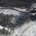
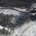

If you wish to receive all the Rosa Khutor news, subscribe to our news feed instantly using your e-mail.
Press releases  Top
Top
| 2005 | 2006 | 2007 | 2008 | 2009 | 2010 | 2011 | ||||||
February 9 «Интеррос» представил общественности проект развития горнолыжного курорта «Роза Хутор»
February 11 Interros Staff Took Part in the Round Table “Sochi and the Krasnaya Polyana Mountain Climatic Resort: Yeaterday, Today, Tomorrow”
March 31 Определен генеральный проектировщик горнолыжного курорта «Роза Хутор»
April 27 Director General of Rosa Khutor Company Took Part in the Public Hearings on the Project of the Krasnaya Polyana Mountain Climatic Complex
June 25 Sochi Office for Tourism in the Krasnaya Polyana Resort
October 3 The “Rosa Khutor” Project Presented in the Fourth Economic Forum Kuban-2005
December 20 Russian Ecologists to Approve the Building of the Alpine Ski Resort Roza Khutor
February 21 Компания "Роза Хутор" стала победителем конкурса на право аренды земельного участка площадью 125 га в Сочинском национальном парке
April 24 Генеральный директор «Розы Хутор» Нина Загорулько приняла участие в работе Международного конгресса горнолыжной индустрии
September 1 Project
February 19 Компания «Роза Хутор» и Всемирный фонд дикой природы объединят усилия для развития экологического строительства
February 21 The Roza Khutor Alpine Ski Resort to be Presented while Reception the IOC Evaluation Commission in Krasnaya Polyana, Sochi
April 5 Rosa Khutor Company Appoints Roger McCarthy Strategy and Production Director
May 21 Rosa Khutor to Support WWF Project, Aimed at Reintroducing the Persian Leopard in the Northern Caucasus.
July 5 «Роза Хутор» примет Зимнюю Олимпиаду Сочи 2014
July 13 Компания «Роза Хутор» не получала инвестиционных предложений от группы «Онэксим»
August 7 Президент России Владимир Путин наградил Заявочный комитет «Сочи-2014»
September 26 Эксперты МОК посетили горнолыжный курорт «Роза Хутор»
October 1 Сергей Трубин назначен Генеральным директором компании «Роза Хутор»
October 2 Создан Оргкомитет «Сочи-2014» (с официального сайта «Сочи-2014»)
October 16 ОАО «ОПИН» стало управляющей компанией по развитию курорта «Роза Хутор»
November 22 ОАО «ОПИН» объявляет о подписании договора на оказание услуг по управлению горнолыжным курортом «Роза Хутор»
December 25 Кавказский заповедник готовится к приёму леопарда
February 5 Специалисты Сочинского национального парка представили «Экологический мониторинг горнолыжного комплекса «Роза Хутор»
April 24 The first visit of the IOC Coordination Commission in Sochi, April 21-23, 2008
May 31 The Most High-Altitude in the World Sport Stars Alley in the Rosa Khutor Alpine Ski Resort
July 4 Sport Stars Alley Become Wider
July 10 The first leopard’s "house" built in Sochi
September 4 IOC to Approve Places for Freestyle Piste and Mountain Olympic Village on the Rosa Khutor Territory
September 19 Vnesheconombank and the Ski Resort Development Company Rosa Khutor to Announce Signing of the Agreement on General Principles of Financing the Project “Construction and Operation of the Alpine Ski Resort Rosa Khutor”
December 10 The Ski Resort Development Limited Liability Company Rosa Khutor Stops Construction of the Alpine Ski Resort Rosa Khutor
February 4 Public Institution Sochi National Park, the Ski Resort Development Company Rosa Khutor and Krasnodar Department of the Federal Property Management Agency Have Signed an Amicable Settlement
March 12 The Fifteenth Arbitration Court of Appeal adopted the last amicable agreement on lease of lands on which the Ski Resort Rosa Khutor is now being built
April 20 ON SIGNING CREDIT AGREEMENT BETWEEN VNESHECONOMBANK AND ROSA KHUTOR LTD.
May 14 The second visit of the IOC Coordination Commission in Sochi, Russia, May 12-14, 2009
June 5 The Ski Resort Development Limited Liability Company Rosa Khutor, Public Institute Sochi National Park and the Russian Ministry of Natural Resources Celebrated Ecological Holidays: World Environment Day and Ecologist’s Day
June 19 EGM of Rosa Khutor participants on June 19, 2009
September 19 Sochi National Park Welcomed the First Leopards
November 3 FIS Management Visited the Alpine Ski Resort Rosa Khutor
December 23 Retrospective Photo-Exhibition “Reserved Russia” is Open
February 12 Rosa Khutor and Publishing House “Komsomolskaya Pravda” on the Olympiad in Vancouver
February 23 Presentation of Ski Resort Rosa Khutor on the Territory of the Main Press Center of the Olympic Games in Vancouver
March 26 Third Visit of FIS to Ski Resort Rosa Khutor
April 15 Third Visit of the IOC Coordination Committee to Sochi, 13-15 April, 2010
May 3 Leopards from Iran Getting Used to Sochi
May 6 Company for Development of Ski Resort Rosa Khutor and The Rezidor Hotel Group have entered into Agreement on Management of two hotels on the territory of Ski Resort Rosa Khutor.
June 7 President of International Olympic Committee Jacque Rogge visited Ski Resort Rosa Khutor
June 11 Construction of a Hotel of HELIOPARK Chain Launched in the Rosa Khutor Resort
July 4 Alley “Stars of Sport” in Rosa Khutor Resort Grew Bigger
August 3 President of the Russian Federation Dmitry Medvedev got the first ski pass during his visit top to the Ski Resort Rosa Khutor
October 27 AZIMUT Hotel is to appear in Ski Resort Rosa Khutor
November 25 Alpine Ski European Cup in February 2011
December 14 Rosa Khutor LLC and Compagnie des Alpes (France) reached a strategic partnership agreement on management of the Rosa Khutor Ski Resort
December 15 Olympic courses are open at the Alpine centre Rosa Khutor
January 4 President of the Russian Federation Dmitry Medvedev held a working session devoted to preparations to the Olympics 2014 in the territory of ski resort “Rosa Khutor”
January 29 From January 29 ski resort “Rosa Khutor” begins its work in a test operation mode
February 11 The Russian national alpine ski championship starts at ski resort “Rosa Khutor” on February 12, 2011
February 11 On-line booking for tickets to the finish area in the Russian national and European alpine ski championship competitions is opened
February 13 The Russian national ski championship competition was held at ski resort “Rosa Khutor” on February 12, 2011
February 17 On February 18, 2011 the European ski championship starts at ski resort “Rosa Khutor”
February 19 On February 18, 2011 the Alpine Ski European Cup for men was held at ski resort “Rosa Khutor”— the first test event within the framework of preparations to the Winter Olympics 2014 in Sochi
February 23 On February 23, 2011 the Alpine Ski European Cup for women was held at ski resort “Rosa Khutor”
February 24 By resolution of the panel of judges the European Cup Super Giant competitions for women were moved to February 25th
February 24 Today was the second day of the European Cup downhill competitions for women held on the “Rosa Khutor” ski resort
February 25 From February 26 our ski resort is opened for visitors in a test operation mode
February 25 Today was the last day of the European Alpine Ski Championship competitions for women
March 3 Free ski-passes for ladies as a Women’s Day present
March 4 “Rosa Khutor” LLC and Accor Group have signed an agreement for operating “Mercure Rosa Khutor” hotel in Sochi
March 15 The “Rosa Khutor” team of ski instructors took out all of the first places in the Open Competition for Ski Instructors of Krasnaya Polyana
March 17 “IFK Hotel Management” will operate the first hotel opened at “Rosa Khutor” ski resort
March 21 Carlsberg Jibbing Fest, sports and music festival, has just ended in “Rosa Khutor” resort
March 22 IOC and FIS assessed readiness of ski resort “Rosa Khutor” for holding the World Ski Championship in 2012
March 23 “Rosa Khutor” Ski Resort Development Company” will take part in the program for restoration of the ecosystem of the Mzmyta river basin
March 31 Ski resort “Rosa Khutor” will be opened for visitors until May 9, 2011
April 20 From April 30 the Freestyle Camp will start its work at “Rosa Khutor” ski resort
April 28 Mass media accreditation at Freestyle Camp 2011
April 29 On April 27-28 the FIS management paid a scheduled inspection visit to ski resort “Rosa Khutor”
May 10 The alpine ski season 2010-2011 at “Rosa Khutor” ski resort in Krasnaya Polyana closed on May 9
May 14 Ratrack operators of “Rosa Khutor” ski resort took part in the 10th international PistenBully Professionals' Camp 2011
June 6 From June 6 to June 27 volunteers of construction gang “Avtoradio” will work at “Rosa Khutor” ski resort – joint promo-action of the leading Russian radio station and the ski resort
June 20 Ski resort “Rosa Khutor” won in nomination “Discovery of the Year”
July 3 New nursery plants were planted on the Sports Stars’ Alley at “Rosa Khutor” ski resort
July 6 30 sets of medals will be awarded at “Rosa Khutor” ski resort in 2014
July 25 FIS representatives inspected Olympic venues of Rosa Khutor Alpine ski resort – snowboard-park and freestyle center
September 30 FIS representatives inspected Olympic venues of Rosa Khutor resort
October 26 Construction of two hotels at Rosa Khutor resort are near completion
November 21 На курорте «Роза Хутор» появится первый в России отель под брендом «Extreme»
December 1 В Экстрим-парке «Роза Хутор» начался монтаж канатных дорог
December 13 Курорт «Роза Хутор» выпустил уникальный фотоальбом «Горнолыжный спорт в России. История и современность»
December 19 Сотрудник курорта "Роза Хутор" Алексей Букинич стал первым в России обладателем почетного звания "Снежный барс России"
December 20 Opening of Alpine skiing season 2011/2012 at Rosa Khutor resort will take place in December, 24
December 21 Аккредитация СМИ на открытие горнолыжного сезона 2011/2012 на курорте «Роза Хутор»
December 26 Владислав Третьяк – Бургомистр курорта «Роза Хутор»
December 27 Курорт «Роза Хутор» открыл горнолыжный сезон 2011/2012
Publications Top
| 2008 | 2009 | 2010 | 2011 | |||
Komsomolskaya Pravda Sochi has passed the first exam
Sport Express Rosa Khutor is ahead of the schedule
Sovetskiy Sport “Rose is blooming. Special report: Our correspondent has inspected the Olympic projects within five years before the beginning of the games.
Komsomolskaya Pravda Krasnaya Polyana: five years to the Olympics
Moskovskaya Pravda Mountains are not a city
Interfax IOC looked for it, but failed to find anything
Sovetskiy Sport The great dozen. 12 Olympic commissioners have again praised the work on the preparation of the Games-2014
Sport Express Killy&Co are fully satisfied with the progress of works
Moskovsky Komsomolets Olympic projects have gone up in the world
Komsomolskaya Pravda Vladimir Potanin: “We will build our own Courchevel in Krasnaya Polyana”
Sport Express Less than one year left before first competitions
Sport Express FIS confirmed: "Rosa Khutor" is ready for the Games
Vedomosti, 103 (2621) Visiting «Interros»
Sovietsky Sport, №98-В(18156) Popov planted a fir tree
www.kremlin.ru Web site of the President of Russia Dmitry Medvedev inspected sports facilities which are being built in the ski resort “Rosa Khutor”
Komsomolskaya Pravda Pistes in Sochi will have artificial snow
деловая газета Маркер «Заработать до Олимпиады не удастся»
Media Top


 
Alpine ski resort Rosa Khutor

Этап Кубка Европы 2011. Мужчины. Скоростной спуск


Press contacts Top
Vergelskaya Viktoriya
Head of public relations and advertising
press@rosaski.com
Kudryavtseva Natalya
Head of public relations and advertising branch
pr@rosaski.com
Phone: +7 (495) 232-18-13
Fax: +7 (495) 666-14-27
| Share: |
|

{kind=link}
{kind=link}
{kind=link}
{kind=link}
{kind=link}
{kind=link}
{kind=link}
{kind=link}
{kind=link}
{kind=link}
{kind=link}
{kind=link}
{kind=link}
{kind=link}
{kind=link}
{kind=link}
{kind=link}
{kind=link}
{kind=link}
{kind=link}
{kind=link}
{kind=link}
{kind=link}
{kind=link}
{kind=link}